전자계산기기사 (2013-03-10 기출문제)
1과목: 시스템 프로그래밍
1. 원시 프로그램을 하나의 긴 스트링으로 보고 원시 프로그램을 문자 단위로 스캐닝하여 문법적으로 의미있는 그룹들로 분할하는 과정은?
- Syntax analysis
- Code generation
- Code optimization
- Lexical analysis
(정답률: 53%)

2. 어셈블리어에서 어떤 기호적 이름에 상수 값을 할당하는 명령은?
- EQU
- ASSUME
- LIST
- EJECT
(정답률: 77%)
3. 프로그램 작성시 한 프로그램 내에서 동일한 코드가 반복될 경우 반복되는 코드를 한번만 작성하여 특정 이름으로 정의한 후, 그 코드가 필요할 때마다 정의된 이름을 호출하여 사용하는 것은?
- 필터
- 리터럴 테이블
- 매크로
- 프로세스
(정답률: 80%)
4. 주기억장치의 배치 전략 중 입력된 작업을 가장 큰 공백에 배치하는 전략은?
- 최악 적합 전략
- 최적 적합 전략
- 최초 적합 전략
- 최종 적합 전략
(정답률: 77%)
5. 일반적인 로더에 가장 가까운 것은?
- Direct Linking Loader
- Dynamic Loading Loader
- Absolute Loader
- Compile And Go Loader
(정답률: 72%)
6. Round-Robin 스케줄링에 대한 설명으로 옳지 않은 것은?
- 프로세스들이 중앙처리장치에서 시간량에 제한을 받는다.
- 시분할 시스템에 효과적이다.
- 선점형 기법이다.
- 프로세스들이 배당 시간내에 작업을 완료하지 못하면 폐기된다.
(정답률: 62%)
7. 절대로더에서 기능과 그 행위 주체의 연결이 옳지 않은 것은?
- 할당 - 프로그래머
- 연결 - 로더
- 재배치 - 어셈블러
- 적재 - 로더
(정답률: 61%)
8. 프로세서들이 서로 작업을 진행하지 못하고 영원히 대기상태로 빠지게 되는 현상을 무엇이라고 하는가?
- thrashing
- working set
- semaphore
- deadlock
(정답률: 71%)
9. 시스템 프로그래밍 언어로 가장 적합한 것은?
- FORTRAN
- COBOL
- PASCAL
- C
(정답률: 72%)
10. 기계어에 대한 설명으로 옳지 않은 것은?
- 프로그램의 유지보수가 용이하다.
- 프로그램의 실행 속도가 빠르다.
- 호환성이 없고 기계마다 언어가 다르다.
- 2진수를 사용하여 데이터를 표현한다.
(정답률: 55%)
11. 프로그램 내에서 양쪽 오퍼랜드에 기억된 내용을 서로 바꾸어야 할 때 사용하는 어셈블리어 명령은?
- NEG
- CBW
- CWD
- XCHG
(정답률: 77%)
12. 어셈블러를 two-pass로 구성하는 주된 이유는?
- 한 개의 pass만을 사용하면 처리 속도가 감소하기 때문에
- 한 개의 pass만을 사용하면 유지보수가 어렵기 때문에
- 한 개의 pass만을 사용하면 비용 발생이 크기 때문에
- 한 개의 pass만을 사용하면 기호를 모두 정의한 뒤에 해당 기호를 사용해야만 하기 때문에
(정답률: 80%)
13. 페이지 교체 기법 중 각 페이지마다 계수기나 스택을 두어 현 시점에서 가장 오랫동안 사용하지 않은, 즉 가장 오래 전에 사용된 페이지를 교체하는 기법은?
- RR
- LFU
- LRU
- FIFO
(정답률: 68%)
14. 로더(Loader)의 기능이 아닌 것은?
- Compile
- Relocation
- Link
- Allocation
(정답률: 73%)
15. 프로그래밍 언어의 해독 순서는?
- 링커 → 로더 → 컴파일러
- 컴파일러 → 링커 → 로더
- 로더 → 링커 → 컴파일러
- 컴파일러 → 로더 → 링커
(정답률: 73%)
16. 운영체제의 성능 평가 요소로 거리가 먼 것은?
- 사용 가능도
- 반환 시간
- 처리 능력
- 비용
(정답률: 71%)
17. 프로세스가 일정시간 동안 자주 참조하는 페이지들의 집합을 무엇이라고 하는가?
- Locality
- Thrashing
- Paging
- Working Set
(정답률: 63%)
18. 교착상태 발생의 필요조건이 아닌 것은?
- 상호배제
- 원형대기
- 선점
- 점유와 대기
(정답률: 71%)
19. 프로세스(Process)의 정의가 될 수 없는 것은?
- 실행중인 프로그램
- PCB를 가진 프로그램
- 프로세서가 할당되는 실체
- 동기적 행위를 일으키는 주체
(정답률: 69%)
20. 매크로 프로세서(Macro Processor)의 기본 수행 작업에 해당하지 않는 것은?
- 매크로 정의 확장
- 매크로 정의 인식
- 매크로 호출 인식
- 매크로 확장
(정답률: 55%)
2과목: 전자계산기구조
21. 프로그램 수행 도중 서로 다른 번지의 주소를 동시에 지정하는 방식은?
- 파이프라인 방식
- 인터리빙 방식
- 인코딩 방식
- 메모리 캐시 방식
(정답률: 48%)
22. 우선순위 체제를 구성하기 위한 기능으로 적당하지 않은 것은?
- 우선순위를 부가하는 기능
- 인터럽트 요청시 우선순위를 판별하는 기능
- 우선순위가 상대적으로 높은 장치의 인터럽트 서비스를 먼저 수행하게 하는 기능
- 우선순위를 해제하는 기능
(정답률: 58%)
23. RAID-5는 RAID-4의 어떤 문제점을 보완하기 위하여 개발되었는가?
- 병렬 액세스의 불가능
- 긴 쓰기 동작 시간
- 패리티 디스크의 액세스 집중
- 많은 수의 검사 디스크 사용
(정답률: 54%)
24. 기억 소자 중 사용자가 읽기/쓰기를 임의로 할 수 없는 것은?
- ROM
- DRAM
- SRAM
- Core Memory
(정답률: 65%)
25. 연관 기억장치(Associative memory)의 특성으로 옳은 것은?
- 프로그램의 크기와 관계된다.
- 프로그래밍 언어와 관련이 깊다.
- 기억된 내용에 의해 addressing이 가능하다.
- 저장 용량의 증가와 관련이 있다.
(정답률: 60%)
26. 10진수 +426을 언팩 10진수 형식(unpacked decimal format)으로 표현하면?
- F4F2C6
- F4F2D6
- 4F2F6C
- 4F2F6D
(정답률: 53%)
27. 다중처리기를 사용하여 개선하고자 하는 것 중 주된 목표가 아닌 것은?
- 유연성
- 신뢰성
- 대중성
- 수행속도
(정답률: 65%)
28. 비동기식 버스에 대한 설명으로 틀린 것은?
- 각 버스 동작이 완료되는 즉시 연관된 다음 동작이 일어나므로 낭비되는 시간이 없다.
- 연속적 동작을 처리하기 위한 인터페이스 회로가 복잡해지는 단점이 있다.
- 버스 클록의 첫 번째 주기 동안 CPU가 주소와 읽기 제어신호를 기억장치로 보낸다.
- 일반적으로 소규모 컴퓨터 시스템에서 사용된다.
(정답률: 37%)
29. 다음 중 임의 접근(random access)에 적합하지 않은 기억장치는?
- 자기 코어 장치
- 자기 디스크 장치
- 자기 드럼 장치
- 자기 테이프 장치
(정답률: 52%)
30. 다음 연산을 수행한 결과와 일치되는 것은?
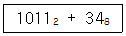
- 3710
- 3810
- 2716
- 2816
(정답률: 52%)
31. 다음은 정규화된 부동 소수점 방식으로 표현된 두 수의 덧셈 과정이다. 순서가 바르게 된 것은?
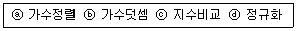
- ⓐ→ⓑ→ⓒ→ⓓ
- ⓒ→ⓐ→ⓑ→ⓓ
- ⓑ→ⓐ→ⓒ→ⓓ
- ⓒ→ⓑ→ⓓ→ⓐ
(정답률: 57%)
32. 채널 프로그램이 첫 번째 채널 명령어를 주기억장치에서 읽어오기 위해 사용하는 것은?
- CAW(Channel Address Word)
- CSW(Channel Status Word)
- interrupt
- I/O command
(정답률: 52%)
33. 하드웨어 신호에 의하여 특정 번지의 서브루틴을 수행하는 것은?
- handshaking mode
- vectored interrupt
- DMA
- subroutine call
(정답률: 47%)
34. 가상 기억체제에서 사용되는 페이지 모드가 아닌 것은?
- Free
- In-use
- In-transition
- On-locked
(정답률: 53%)
35. 우선순위 중재 방식 중 중재동작이 끝날 때마다 모든 마스터들의 우선순위가 한 단계씩 낮아지고, 가장 우선순위가 낮았던 마스터가 최상위 우선순위를 가지는 방식을 무엇이라 하는가?
- 회전 우선순위
- 임의 우선순위
- 동등 우선순위
- 최소-최근 사용 우선순위
(정답률: 64%)
36. 다음 중 분리 캐시(split cache)를 사용하는 주요 이유는?
- 캐시 크기의 확장
- 캐시 적중률 향상
- 캐시 액세스 충돌 제거
- 데이터 일관성 유지
(정답률: 56%)
37. 마이크로명령어 형식에 관한 설명으로 틀린 것은?
- 조건 필드는 분기에 사용될 제어신호들을 발생시킨다.
- 연산 필드가 2개인 경우 2개의 마이크로 연산이 동시에 수행된다.
- 주소 필드는 분기가 발생할 경우 목적지 마이크로명령어 주소로 사용된다.
- 분기 필드는 분기의 종류와 다음에 실행할 마이크로명령어의 주소를 결정하는 방법을 명시한다.
(정답률: 34%)
38. 사이클 타임(cycle time)이 750나노초(nano second)인 기억장치에서는 이론적으로 1초에 몇 개의 데이터(data)를 불러 낼 수 있는가?
- 약 750개
- 약 750×106개
- 약 1.3×106개
- 약 1330개
(정답률: 60%)
39. 보조기억장치로부터 주기억장치로 필요한 페이지를 옮기는 것은?
- saving
- paging
- storing
- spooling
(정답률: 53%)
40. 다음은 ISZ 명령어(increment and skip if zero)를 수행하기 위해 필요한 마이크로 연산이다. ( )에 들어갈 내용으로 옳은 것은?
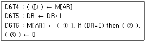
- ① DR, ② PC ← PC+1, ③ SC
- ① DA, ② SC ← SC+1, ③ DR
- ① DR, ② SC ← SC+1, ③ AR
- ① AR, ② PC ← PC+1, ③ E
(정답률: 57%)
3과목: 마이크로전자계산기
41. 8085 마이크로프로세서에서 주소와 데이터를 분리하기 위해 필요한 신호는?
- ALE(Address Latch Enable) 신호
- /WR 신호
- /RE 신호
- IO/M 신호
(정답률: 46%)
42. 동기형 계수기로 사용할 수 없는 것은?
- 링 카운터
- BCD 카운터
- 2진 카운터
- 2진 업다운 카운터
(정답률: 67%)
43. 일반적으로 DMA 장치가 가지는 3개의 레지스터가 아닌 것은?
- 주소 레지스터
- 워드 카운터 레지스터
- 제어 레지스터
- 인터럽트 레지스터
(정답률: 41%)
44. 비동기식(Asynchronous) 직렬(Serial) 입출력 인터페이스를 올바르게 설명한 것은?
- 데이터를 block으로 묶어서 전송하는 방식이다.
- 변복조장치(MODEM)를 사용한 장거리 데이터 전송은 불가능하다.
- 단위 데이터의 전후에 스타트(start) 신호와 스톱(stop) 신호가 필요하다.
- 고속 데이터 전송이 필요한 입출력 장치의 인터페이스에 적합하다.
(정답률: 64%)
45. 주기억 장치와 입출력 장치 사이에 전송 속도차를 극복하기 위해 데이터를 임시 저장하는 장소는?
- 보조기억 장치
- 레지스터
- 인터페이스
- 버퍼
(정답률: 67%)
46. 마이크로프로세서에서 데이터가 저장된 또는 저장될 기억장치의 장소를 지정하기 위해 사용하는 버스(bus)는?
- 레지스터 연결 버스
- 데이터 버스
- 주소 버스
- 제어 버스
(정답률: 43%)
47. 다음 용어 중 데이터가 전송되는 속도를 나타내는 것은?
- 보 레이트(baud rate)
- 듀티 팩터(duty factor)
- 클록 레이트(clock rate)
- 스케일 팩터(scale factor)
(정답률: 63%)
48. 동기 또는 비동기식으로 마이크로프로세서 간의 원거리 통신을 하려고 한다. 이 때 필요하지 않은 장치는?
- MODEM
- RS232 Driver/receiver
- SIO
- PIO
(정답률: 49%)
49. 프로그램을 작성하여 기계어 번역시 또는 실행시 문법적 오류나 논리적 오류를 바로 잡는 과정을 무엇이라 하는가?
- Assembly
- Loading
- Dubugging
- Editing
(정답률: 64%)
50. 스택에 관한 설명으로 틀린 것은?
- 스택은 메모리에만 존재한다.
- 스택에서 읽을 때는 pop 명령을 사용한다.
- 마이크로프로세서에서 스택은 인터럽트와 관련이 깊다.
- 스택은 LIFO 메모리 장치이다.
(정답률: 56%)
51. 우선순위체제 인터럽트 방식에서의 우선순위 식별회로에서 우선순위가 가장 높은 인터럽트 요청신호는?
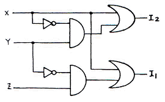
- X
- Y
- Z
- 구별할 수 없다.
(정답률: 52%)
52. 다음 중 단일 칩 마이크로컴퓨터에 해당하는 것은?
- Intel 8080
- Zilog Z80
- Intel 8048
- Motorola MC6800
(정답률: 53%)
53. CMOS RAM의 설명 중 옳지 않은 것은?
- 상보성 금속 산화막 반도체 제조 공법을 사용한다.
- 전원으로부터의 잡음에 대한 허용도가 높다.
- 전력 소비량이 높다.
- 건전지로 전원이 공급되는 하드웨어 구성 요소에 유용하게 사용된다.
(정답률: 49%)
54. 전체 CPU를 하나의 단일 IC로 하면 장점도 있으나 프로세서의 구조가 고정되며, 명령어 집합도 바꿀 수 없게 된다. 이러한 단점을 보완하기 위하여 CPU를 Processor Unit, Microprogram Sequencer, Control memory로 나누어 구성하면 위 단점을 제거할 수 있다. 이런 구조로 된 프로세서를 무엇이라 하는가?
- vector processor
- bit slice microprocessor
- pipeline processor
- array processor
(정답률: 60%)
55. TTL 출력 종류 중 논리값이 0도 아니고 1도 아닌, 고임피던스 상태를 가지며, 특히 bus 구조에 적합한 것은?
- Tri-state 출력
- Open collector 출력
- Totem-pole 출력
- TTL 표준출력
(정답률: 53%)
56. 마이크로컴퓨터 시스템과 외부회로 사이의 데이터 전달 입출력(I/O) 방식이 아닌 것은?
- programmed I/O
- interrupt I/O
- DMA(direct memory access)
- paged I/O
(정답률: 47%)
57. [그림]과 같은 어느 프로그램 중 0123 번지에 CALL A 명령이 있다. 이 CALL A를 수행한 후 PC에 기억된 값은? (단, 모든 명령문은 1바이트라 한다.)
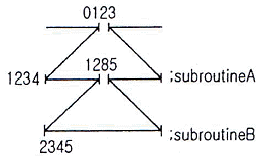
- 0124
- 1234
- 1285
- 2345
(정답률: 47%)
58. 다음 중 누산기가 꼭 필요한 명령 형식은?
- 0-주소 인스트럭션
- 1-주소 인스트럭션
- 2-주소 인스트럭션
- 3-주소 인스트럭션
(정답률: 64%)
59. 8085 CPU에서 클록은 약 2.5MHz]이다. LDA 명령을 수행하는데 13개 T 스테이트가 필요하다. 이때 명령 사이클은 몇 [μs]인가?
- 13
- 5.2
- 2.5
- 3.2
(정답률: 63%)
60. 다음은 마이크로프로세서와 주변장치 사이의 입출력 방법들이다. CPU의 부담이 적은 것부터 나열한 것은?
- 채널에 의한 입출력 - 프로그램에 의한 입출력 - DMA에 의한 입출력
- 프로그램에 의한 입출력 - DMA에 의한 입출력 - 채널에 의한 입출력
- DMA에 의한 입출력 - 프로그램에 의한 입출력 - 채널에 의한 입출력
- 채널에 의한 입출력 - DMA에 의한 입출력 - 프로그램에 의한 입출력
(정답률: 34%)
4과목: 논리회로
61. 3비트에 대한 패리티를 방생시키는 even parity generator는?
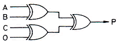
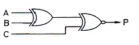
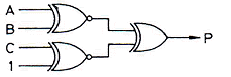
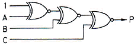
(정답률: 56%)
62. [그림]관 같은 논리회로에 A=5[V], B=5[V]를 인가했을 때 출력 Y 값은? (단, 정논리로 가정한다.)
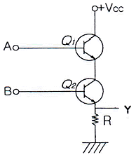
- +Vcc
- 0[V]
- -5[V]
- 10[V]
(정답률: 53%)
63. 비동기식 카운터와 관계없는 것은?
- 전단의 출력이 다음 단의 트리거(trigger) 입력이 된다.
- 회로가 복잡하므로 설계하기가 어렵다.
- 직렬 카운터라고도 한다.
- 리플 카운터(ripple counter)라고도 한다.
(정답률: 43%)
64. 다음 진리표(truth table)에서 출력 Y를 최소화 한 결과는?
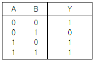
- Y=A+B'
- Y=A'+B
- Y=A'+B'
- Y=AB
(정답률: 57%)
65. 다음 중 [그림]과 같은 회로의 논리식은?
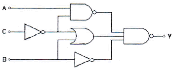
- ABC
- AB+C
- A+B+C
- A'B'C'
(정답률: 28%)
66. 다음 논리회로의 명칭으로 옳은 것은?
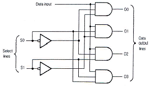
- 1 Line to 1 Line demultiplexer
- 1 Line to 2 Line demultiplexer
- 1 Line to 4 Line demultiplexer
- 1 Line to 4 Line multiplexer
(정답률: 57%)
67. 다음과 같은 회로에서 출력 Y를 올바르게 구한것은?
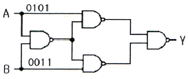
- 0001
- 1001
- 0110
- 0111
(정답률: 60%)
68. 다음 [그림]의 3상태(tri-state) IC에서 출력 가능한 상태가 아닌 것은?
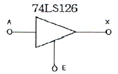
- High
- Low
- Hi-Z
- Low-Z
(정답률: 50%)
69. 다음 회로의 출력값 x의 논리함수식을 유도하고 이 논리함수식을 간략화하였을 때 가장 적합한 회로는?
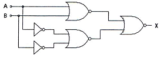
- EX-OR 게이트
- 반가산기 회로
- 반감산기 회로
- 전가산기 회로
(정답률: 59%)
70. [그림]과 같이 멀티플렉서를 이용하여 구성한 조합논리회로의 출력은?
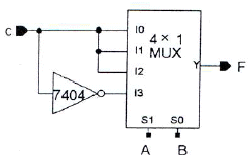
- F(A,B,C) = Σ(1,3,5,6)
- F(A,B,C) = Σ(2,4,7)
- F(A,B,C) = Σ(1,3,6)
- F(A,B,C) = Σ(0,3,5,6)
(정답률: 54%)
71. 5단의 링 카운터에 해당되는 % 듀티 사이클은?
- 50%
- 25%
- 20%
- 10%
(정답률: 60%)
72. 다음의 카운터 회로는 몇 진 카운터인가? (단, 카운터 출력은 첨자 0이 붙은 쪽이 LSB라고 본다.)
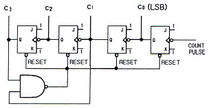
- 2
- 8
- 10
- 16
(정답률: 48%)
73. JK 플립플롭에서 Jn=Kn=1일 때 Qn+1의 출력상태는?
- 반전
- 부정
- 1
- 0
(정답률: 51%)
74. 10진수 0.4375를 2진수로 변환한 것으로 옳은 것은?
- 0.1110(2)
- 0.1101(2)
- 0.1011(2)
- 0.0111(2)
(정답률: 49%)
75. 함수 f = A'BC+AB'C+ABC'의 부정은?
- (A'+B+C)(A+B'+C)(A+B+C')
- (A+B+C)(A'+B'+C')
- (A'+B'+C)(A+B'+C')
- (A+B'+C')(A'+B+C')(A'+B'+C')
(정답률: 42%)
76. 데이터 분재 회로로 사용되는 것은?
- 시프트 레지스터
- 디멀티플렉서
- 인코더
- 멀티플렉서
(정답률: 37%)
77. 10진수의 입력을 전자계산기의 매부 code로 변환시키는 장치는?
- Decoder
- Multiplexer
- Encoder
- Adder
(정답률: 53%)
78. 다음의 보기 중 틀린 것은?
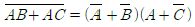
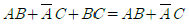
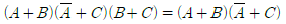
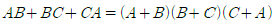
(정답률: 53%)
79. 10진수 42+29를 3-초과 코드(Excess-3 code)로 계산한 것으로 옳은 것은?
- 1010 1010
- 1010 0100
- 1101 1110
- 0111 1000
(정답률: 49%)
80. 다음 중 논리 버퍼(buffer)의 기능으로 옳은 것은?
- 논리 0을 입력했을 때 출력은 하이 임피던스(high impedance) 상태가 된다.
- 지연 소자로서 기능을 한다.
- 입출력의 논리 변화는 없으나 입력되는 신호의 크기가 감소되어 출력된다.
- 버퍼를 사용하지 않았을 때 보다 부하 구동 능력이 다소 감소된다.
(정답률: 49%)
5과목: 데이터통신
81. HDLC의 프레임(Frame)의 구조가 순서대로 올바르게 나열된 것은? (단, A: Address, F: Flag, C: Control, D: Data,S: Frame Check Sequence)
- F-D-C-A-S-F
- F-C-D-S-A-F
- F-A-C-D-S-F
- F-A-D-C-S-F
(정답률: 57%)
82. 문자 동기 전송방식에서 데이터 투명성(Data Transparent)을 위해 삽입되는 제어문자는?
- ETX
- STX
- DLE
- SYN
(정답률: 54%)
83. 인터넷 프로토콜로 사용되는 TCP/IP의 계층화 모델 중 Transport 계층에서 사용되는 프로토콜은?
- FTP
- IP
- ICMP
- UDP
(정답률: 54%)
84. 송신측은 하나의 블록을 전송한 후 수신측에서 에러의 발생을 점검한 다음 에러 발생 유무 신호를 보내올 때까지 기다리는 ARQ 방식은?
- continuous ARQ
- adaptive ARQ
- Go-Back-N ARQ
- stop and wait ARQ
(정답률: 60%)
85. 아날로그 데이터를 디지털 신호로 변환하는 방식은?
- 진폭 편이 변조(ASK)
- 주파수 편이 변조(FSK)
- 위상 편이 변조(PSK)
- 펄스 부호 변조(PCM)
(정답률: 59%)
86. 인터 네트워킹을 위해 사용되는 관련 장비가 아닌 것은?
- 리피터
- 라우터
- 브리지
- 감쇄기
(정답률: 63%)
87. 다음 베이스 밴드 전송방식 중 비트 간격의 시작점에서는 항상 천이가 발생하며, "1"의 경우에는 비트 간격의 중간에서 천이가 발생하고, "0"의 경우에는 비트 간격의 중간에서 천이가 없는 방식은?
- NRZ-L 방식
- NRZ-M 방식
- NRZ-S 방식
- NRZ-I 방식
(정답률: 53%)
88. 비동기 전송에서 한문자의 전송과 그 다음 문자의 전송을 어떻게 구별하는가?
- 문자 처음과 끝에 Block pattern(01111110)을 추가하여 구분한다.
- 문자 앞에 (01101101)코드를 추가하여 구분한다.
- 각 문자코드의 맨 앞에는 시작비트를 두고, 문자코드 맨 뒤에는 정지비트를 두어 구분한다.
- 문자와 문자 사이에 (11111111)코드를 추가하여 구분한다.
(정답률: 64%)
89. IP 주소의 5개 클래수 중 멀티캐스팅을 사용하기 위해 예약되어 있으며 netid와 hostid가 없는 것은?
- A 클래스
- B 클래스
- C 클래스
- D 클래스
(정답률: 60%)
90. 다음 표에서 A, B, C, D 문자 전송시 수직 홀수 패리티 비트 검사에서 패리티 비트 값이 잘못된 문자는?
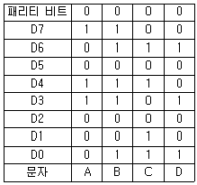
- A
- B
- C
- D
(정답률: 66%)
91. 통신 속도가 2400[baud]이고, 4상 위상변조를하면 데이터의 전송속도는 얼마인가?
- 2400[bps]
- 4800[bps]
- 9600[bps]
- 19200[bps]
(정답률: 32%)
92. UDP 헤더에 포함되지 않는 것은?
- checksum
- length
- sequence number
- source port
(정답률: 24%)
93. HDLC에서 피기백킹(piggybacking) 기법을 통해 데이터에 대한 확인응답을 보낼 때 사용되는 프레임은?
- I-프레임
- S-프레임
- U-프레임
- A-프레임
(정답률: 49%)
94. 프레임 단위로 오류 검출을 위한 코드를 계산하여 프레임 끝에 FCS를 부착하는 것은?
- Hamming Coding
- Parity Check
- Block Sum Check
- Cyclic Redundancy Check
(정답률: 66%)
95. HDLC 전송 제어 절차의 세가지 동작 모드에 속하지 않는 것은?
- 정규 응답 모드(NRM)
- 동기 응답 모드(SRM)
- 비동기 응답 모드(ARM)
- 비동기 평형 모드(ABM)
(정답률: 45%)
96. 비트 방식의 데이터링크 프로토콜이 아닌 것은?
- HDLC
- SDLC
- LAPB
- BSC
(정답률: 40%)
97. TCP 프로토콜을 사용하는 응용 계층의 서비스가 아닌 것은?
- SNMP
- FTP
- Telnet
- HTTP
(정답률: 50%)
98. TCP/IP 관련 프로토콜 중 하이퍼텍스트 전송을 위한 프로토콜은?
- HTTP
- SMTP
- SNMP
- Mailto
(정답률: 58%)
99. 다음 설명에 해당하는 OSI 7계층은?
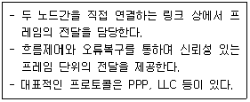
- 물리 계층
- 데이터링크 계층
- 네트워크 계층
- 트랜스포트 계층
(정답률: 45%)
100. 공중 통신 사업자로부터 회선을 대여 받아 통신처리 기능을 이용, 부가적인 정보 서비스를 제공하는 서비스 망은?
- Local Area Network
- Metropolitan Area Network
- Wide Area Network
- Value Area Network
(정답률: 55%)